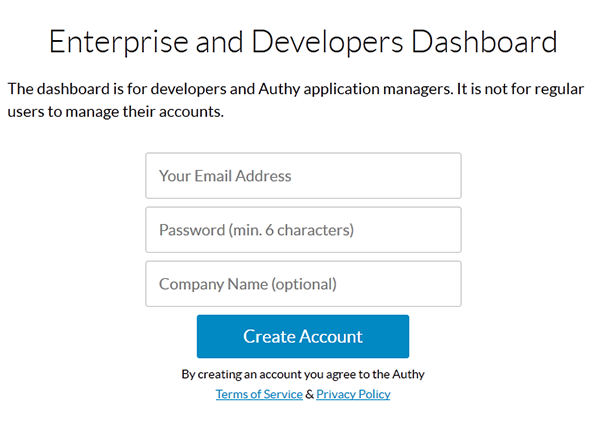
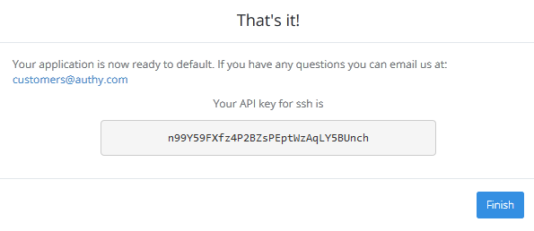

Configure Two-Factor SSH Authentication with Authy - CentOS, Fedora
Difficulty: 1
Time: 10 minutes
Introduction
Authy provides an easier platform for setting up an authentication as compared to two factor authentication. It is very simple to install and manage. In this article, you will learn how to configure a two-factor SSH Authentication with Authy. For this, you need to install an Authy application in your smartphone. You will get this in Google play.
Configure Authy in phone
- Download Authy from Google play and then configure Authy by getting it verified on your mobile number.
- Build a developer account at https://dashboard.authy.com/signup.
Make sure that you use the same mobile number which you have used in the Authy application.
- Verify your account by completing the verification process sent to your registered email account. You will get a token on your mobile.
Create an application
- Log in to your developer's account.

- Enter the Application Name and click on the Create App button to create an application.

- You will get an API key after you have created the application.

Copy the API key as it is. You will need this in further steps.
Configure server
- Download the Authy installer.
curl "https://raw.githubusercontent.com/authy/authy-ssh/master/authy-ssh" -o authy-ssh
- Install Authy.
sudo bash authy-ssh install /usr/local/bin
It will prompt you to enter the API key that you received from the Authy website. Choose option 1 when prompted for what to do when Authy is down.
Configure two-factor for the user
- Run the following command to configure the user.
sudo /usr/local/bin/authy-ssh enable User_name email_id country_code
- Restart the SSH server.
sudo service sshd restart
- Make sure that the command is located at
your/etc/ssh/sshd_config file.
cat /etc/ssh/sshd_config | grep ForceCommand
- If the command was not installed at
/etc/ssh/sshd_config file, manually enter it and restart the SSH service again.
ForceCommand /usr/local/bin/authy-ssh login
sudo service sshd restart
- Uninstall
authy-ssh using the following command:
sudo /usr/local/bin/authy-ssh uninstall
Next step
In this article, you have learnt to configure two factor authentication in SSH server using Authy. To know more about configuring two factor authentication using Google Authenticator visit, Configure Two-factor SSH Authentication with PAM - CentOS, Fedora